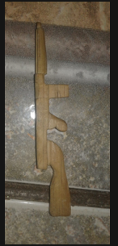

Dibujar a sido algo que hacen todos los niños desde muy pequeño, pero en mi era algo mas habitual y se notaba que tenia ese pequeño toque, por que resaltaban mi sdibujos. Tenian mejor detalles, mejor pintado. A medida que pasaba ese timepo mis habilidadhiban mejorando pero a menor medida. hasta que acabe la escuela . Tuve un lapso muy grande de tiempo entre escuela y colegio. Al punto que para aprovechar el tiempo me inscribieron a clases de dibujo. En las cuales disfrutaba mucho aprendiendo tecnicas y descubriendo que cosas que ya hacian eran tecnicas usadas por profesionales. con el timepo hiba mejorando mi calidad en niveles considerables. cuando enter al colegio y empezamos a tener clases de artes. me fije que era de los pocos que dibujaban bien bien en mi curso. habian quienes me igualaban y otros superaban. Con el pasar del timepo hiba mejorando , mis compañeros queria que les hiciera los dibujos a lo cual me negaba normalmente ya que si lo sentia obligacion no podia dibujar tan bien. Ya en noveno si no recuerdo mal. mis dubujos eran muy buenos que el maestro me habia dicho que debia exponerlos pero al final no quise y mis dibujos solo lo vieron alguno de mis compañeros ,el maestro y otras personas, no me considero un profesional pero si que tengo habilidad suficiente como para colgarlos y tenerlos de decoracion
Dibujar a sido algo que hacen todos los niños desde muy pequeño, pero en mi era algo mas habitual y se notaba que tenia ese pequeño toque, por que resaltaban mi sdibujos. Tenian mejor detalles, mejor pintado. A medida que pasaba ese timepo mis habilidadhiban mejorando pero a menor medida. hasta que acabe la escuela . Tuve un lapso muy grande de tiempo entre escuela y colegio. Al punto que para aprovechar el tiempo me inscribieron a clases de dibujo. En las cuales disfrutaba mucho aprendiendo tecnicas y descubriendo que cosas que ya hacian eran tecnicas usadas por profesionales. con el timepo hiba mejorando mi calidad en niveles considerables. cuando enter al colegio y empezamos a tener clases de artes. me fije que era de los pocos que dibujaban bien bien en mi curso. habian quienes me igualaban y otros superaban. Con el pasar del timepo hiba mejorando , mis compañeros queria que les hiciera los dibujos a lo cual me negaba normalmente ya que si lo sentia obligacion no podia dibujar tan bien. Ya en noveno si no recuerdo mal. mis dubujos eran muy buenos que el maestro me habia dicho que debia exponerlos pero al final no quise y mis dibujos solo lo vieron alguno de mis compañeros ,el maestro y otras personas, no me considero un profesional pero si que tengo habilidad suficiente como para colgarlos y tenerlos de decoracion
Esta habilidad es la menos desarrollada y me falta mucho por mejorar,pero a la ves que es en la que nunca resibi clases ni ayuda de nadie para aprender. Un dia no se por que decidi tomar un pedazo de madera y un cuter y le empece a desgastar, no tenia idea de lo que queria hacer o el por que, solo hiba tallando y ya. Con el timepo le empezaba a ver forma de un arma (thompson) con lo cual decidi continuar e ir con mas cuidado al punto que fue teniendo mas y mas la forma. Con el pasar del timepo habia terminado y la mini thompson de madera, del tamaño de un llaver habia acabdo a la ves que habia hecho un pequeño bulto de pedazos de madera y virutas. semejantes a la que deja un lapiz a la hora de sacarle punta. me regañaron por el basural qeu hice, pero me sorprendio que algo que era la primera ves que lo hacia me habia quedado bien. No lo practicado tanto. Pero aun asi lo considero como una de mis habilidades
